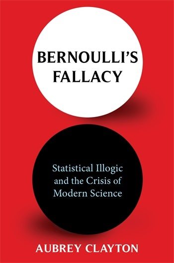

Bernoulli's Fallacy, by Clayton
Saturday December 11, 2021
Bernoulli's Fallacy is that the likelihood of data given a hypothesis is enough to make inferences about that hypothesis (or others). Clayton covers historical and modern aspects of frequentist statistics, and lays crises of replication at the feet of significance testing. I find it largely compelling, though perhaps it neglects problematic contributions of non-statistical pressures in modern academic life. I'm generally on board re: Bayesian methods.

"...statistical methods are a means of accounting for the epistemic role of measurement error and uncertainty..." (page x)
"...an effect—if it is found—is likely overstated and unlikely to be replicable, a paradox known as the “winner's curse.”" (page xi)
The common theme is that there would be no need to continually treat the symptoms of statistical misuse if the underlying disease were addressed.
I offer the following for consideration:
Hypothesizing after the results of an experiment are known does not necessarily present a problem and in fact is the way that most hypotheses are ever constructed.
No penalty need be paid, or correction made, for testing multiple hypotheses at once using the same data.
The conditions causing an experiment to be terminated are largely immaterial to the inferences drawn from it. In particular, an experimenter is free to keep conducting trials until achieving a desired result, with no harm to the resulting inferences.
No special care is required to avoid “overfitting” a model to the data, and validating the model against a separate set of test data is generally a waste.
No corrections need to be made to statistical estimators (such as the sample variance as an estimate of population variance) to ensure they are “unbiased.” In fact, by doing so the quality of those estimators may be made worse.
It is impossible to “measure” a probability by experimentation. Furthermore, all statements that begin “The probability is ...” commit a category mistake. There is no such thing as “objective” probability.
Extremely improbably events are not necessarily noteworthy or reason to call into question whatever assumed hypotheses implied they were improbable in the first place.
Statistical methods requiring an assumption of a particular distribution (for example, the normal distribution) for the error in measurement are perfectly valid whether or not the data “actually is” normally distributed.
It makes no sense to talk about whether data “actually is” normally distributed or could have been sampled from a normally distributed population, or any other such consideration.
There is no need to memorize a complex menagerie of different tests or estimators to apply to different kinds of problems with different distributional assumptions. Fundamentally, all statistical problems are the same.
“Rejecting” or “accepting” a hypothesis is not the proper function of statistics and is, in fact, dangerously misleading and destructive.
The point of statistical inference is not to produce the right answers with high frequency, but rather to always produce the inferences best supported by the data at hand when combined with existing background knowledge and assumptions.
Science is largely not a process of falsifying claims definitively, but rather assigning them probabilities and updating those probabilities in light of observation. This process is endless. No proposition apart from a logical contradiction should ever get assigned probability 0, and nothing short of a logical tautology should get probability 1.
The more unexpected, surprising, or contrary to established theory a proposition seems, the more impressive the evidence must be before that proposition is taken seriously.
Heavily influenced by Probability Theory: The Logic of Science by Edwin Jaynes.
"We can, for example, set s = 0.01 and by 99 percent sure. Bernoulli called this “moral certainty,” as distinct from absolute certainty of the kind only logical deduction can provide." (page 8)
"statistics is both much easier and much harder than we have been led to believe." (page 17, italics in original)
"Aristotle's Rhetoric described “the Probably” (in Greek, eikos, from eoika meaning “to seem”) as “that which happens generally but not invariably.” The context for this was his classification of the arguments one could use in a courtroom or legislative debate, where perfect logical deductions may not be available. He called this form of argument an enthymeme, to be distinguished from the purely logical form of argument known as the syllogism, which links together a set of assumed premises to reach deductive conclusions..." (page 22)
"Hume's general point [in An Enquiry Concerning Human Understanding], later referred to as the problem of induction, was that we have no way of knowing experience is a guide for valid conclusions about the future because if we did, that claim could be based only on past experience." (page 35)
I kind of like the names Clayton uses in his tables of calculations: "Prior probability" is normal, then "Sampling probability" is used for the likelihood of the data, and then he multiplies them together to get a "Pathway probability."
"Whether Bayes himself believed he had disproved Hume we have no way of knowing. Some historians such as Stephen Stigler at the University of Chicago have suggested that since Bayes did not find the counterexample sufficiently convincing because it relied on some assumptions he could not justify, he delayed publishing his results. When presenting Bayes's results to the world, Price did not shy away from emphasizing their philosophical and religious significance. Contemporary reprints of the essay show Price intended the title to be “A Method of Calculating the Exact Probability of All Conclusions founded on Induction.” In his publication, he added this preamble: “The purpose I mean is, to shew what reason we have for believing that there are in the constitution of things fixt laws according to which things happen, and that, therefore, the frame of the world must be the effect of the wisdom and power of an intelligent cause; and thus to confirm the argument taken from final causes for the existence of the Deity.” That is, somewhere in the calculation of probabilities for Bayes's rule, Price thought he saw evidence for God." (page 41)
"... logical deduction is just a special case of reasoning with probabilities, in which all the probability values are zeros or ones." (page 53)
"Jaynes's essential point bears repeating: probability is about information." (page 68, italics in original)
"Base rate neglect and the prosecutor's fallacy are the same thing, and both are examples of Bernoulli's Fallacy." (page 103)
"... a new general trend of collecting data in service to the social good. John Graunt, haberdasher by day and demographer by night, had made a breakthrough in London in 1662 when he used weekly mortality records to design an early warning system to detect outbreaks of bubonic plague in the city. Even though the system was never actually deployed, it opened people's eyes to the rich possibilities of data gathering and its usefulness to the state. By the 1740s, prominent thinkers such as the German philosopher Gottfried Achenwall had taken to calling this kind of data statistics (statistik in German), the root of which is the Latin word statisticum meaning “of the state.”" (page 109)
"His [Quetelet's] goal, perhaps antagonized by the Baron de Keverberg's skepticism, was to investigate analytically all the ways people were the same or different and to create a theory of social physics, a set of laws governing society that could be an equivalent of Kepler's laws of planetary motion and other immutable principles of the hard sciences." (page 113)
This reminds me of psychohistory.
"George Pólya gave it the lofty name the central limit theorem" (page 120)
Huh!
"He [Quetelet] would later be harshly ridiculed for his love of the normal distribution by statisticians like Francis Edgeworth, who wrote in 1922: “The theory [of errors] is to be distinguished from the doctrine, the false doctrine, that generally, wherever there is a curve with a single apex representing a group of statistics ... that the curve must be of the ‘normal’ species. The doctrine has been nick-named ‘Quetelismus,’ on the ground that Quetelet exaggerated the prevalence of the normal law.”" (page 122)
Interesting/weird idea from Galton: "statistics by intercomparison." If you can only order people on some characteristic (say intelligence), then do that and then assume it's quantitatively normal. Sort of like QQ plots. Sort of. (page 136)
On page 142 it seems to be saying that Pearson's chi-squared is for general testing of whether data comes from a certain distribution... Is that right? Does this just mean binning out data and comparing counts to expected? Maybe that's it?
"For an experimental scientist without advanced mathematical training, the book [Fisher's Statistical Methods for Research Workers] was a godsend. All such a person had to do was find the procedure corresponding to their problem and follow the instructions." (page 153)
"He [Fisher] proved what he called the fundamental theorem of natural selection: “The rate of increase in fitness of any organism at any time is equal to its genetic variance in fitness at that time.”"
Is this in conflict with Fisher as eugenicist? It seems to be pro-diversity? At least some kinds of diversity...
Interesting comparison between choosing one- or two-sided testing, and Bayesian priors: you're not really bringing zero information to the problem.
Huh - there really is a Social Science Statistics online wizard.
"There is no coherent theory to orthodox statistics, only a loose amalgam of half-baked ideas held together by suggestive naming, catchy slogans, and folk superstition." (page 196)
"As Fisher wrote in Statistical Methods for Research Workers, “No human mind is capable of grasping in its entirety the meaning of any considerable quantity of numerical data. We want to be able to express all the relevant information contained in the mass by means of comparatively few numerical values. This is a purely practical need which the science of statistics is able to some extent to meet." (page 233)
The Fallacy of the Null-Hypothesis Significance Test
The Cult of Statistical Significance
"Harold Jeffreys first proposed the idea of Bayes factors in his Theory of Probability." (page 262)
Daryl Bem (who published in support of psi) amusingly wrote (quoted page 264):
To compensate for this remoteness from our participants, let us at least become intimately familiar with the record of their behavior: the data. Examine them from every angle. Analyze the sexes separately. Make up new composite indexes. If a datum suggests a new hypothesis, try to find further evidence for it elsewhere in the data. If you see dim traces of interesting patterns, try to reorganize the data to bring them into bolder relief. If there are participants you don't like, or trials, observers, or interviewers who gave you anomalous results, place them aside temporarily and see if any coherent patterns emerge. Go on a fishing expedition for something—anything—interesting.
That's from Writing the Empirical Journal Article.
The ASA Statement on p-Values: Context, Process, and Purpose
Statistical Inference in the 21st Century: A World Beyond p < 0.05
"Significance testing was always based on a classification of results into significant/insignificant without regard to effect size or importance; no attempts to rehabilitate it now can change that fundamental aspect nor repair the damage significance testing has already caused. This yes/no binary has well and truly mixed things up." (page 275)
"The better, more complete interpretation of probability is that it measures the plausibility of a proposition given some assumed information. This extends the notion of deductive reasoning—in which a proposition is derivable as a logical consequence of a set of premises—to situations of incomplete information, where the proposition is made more or less plausible, depending on what is assumed to be known." (page 283)
"All probability is conditional." (page 284)
"Once we jettison the bureaucracy of frequentist statistics, we can spend more time doing actual science." (page 287)
"Getting rid of the useless concepts (significance testing, estimators, sufficient and ancillary statistics, stochastic processes) will amount to cutting out probably 90 percent of the standard statistics curriculum. It might even mean giving up on statistics as a separate academic discipline altogether, but that's alright. Probability as a topic should rightfully split time between its parents, math and philosophy, the way logic does. Bayesian statistical inference contains exactly one theorem of importance anyway, and its practical techniques can be taught in a single semester-long course in applied math. There needn't be a whole university department dedicated to it, any more than there needs to be a department of the quadratic formula." (page 287)
"We should no more be teaching p-values in statistics courses than we should be teaching phrenology in medical schools." (page 293)
"Joseph Berkson called this the “interocular traumatic test”; you know what the data means when the conclusion hits you right between the eyes." (page 297)
That's quoted from "Bayesian statistical inference for psychological research."
That source cites "J. Berkson, personal communication, July 14, 1958" and goes on:
"The interocular traumatic test is simple, commands general agreement, and is often applicable; well-conducted experiments often come out that way. But the enthusiast's interocular trauma may be the skeptic's random error. A little arithmetic to verify the extent of the trauma can yield great peace of mind for little cost." (page 217)
"The results of experiments, particularly surprising or controversial ones, can be trusted noly if the experiments are known to be sound; however, as is often the case, an experiment is known to be sound only if it produces the results we expect. So it would seem that no experiment can ever convince us of something surprising. This situation was anticipated by the ancient Greek philosopher Sextus Empiricus. In a skepticism of induction that predated David Hume's by 1,500 years, he wrote: “If they shall judge the intellects by the senses, and the senses by the intellect, this involves circular reasoning inasmuch as it is required that the intellects should be judged first in order that the sense may be judged, and the senses be first scrutinized in order that the intellects may be tested [hence] we possess no means by which to judge objects.”" (page 301)